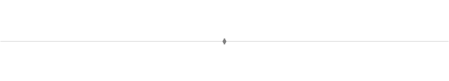
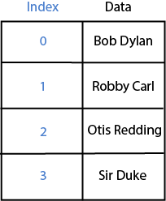
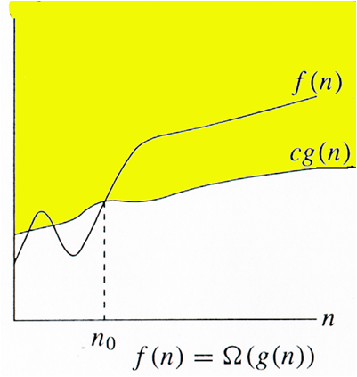
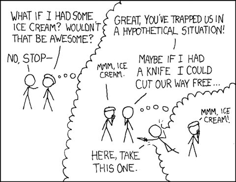
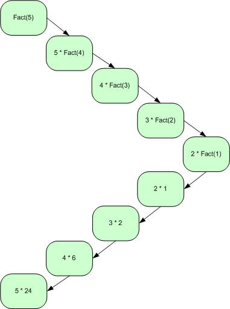

1DescribingAlgorithms
Table of Contents
Introduction

1 Describing Computer Algorithms
We can describe a computer algorithm as a runnable program in a programming language or we have the option of using pseudocode which looks like a programming language mixed into English. The latter helps us to describe an algorithm with out having to be tied down to one specific implementation. (More on this later).
Computer programs contain procedures which specify how to do something. In order to actualy get the procedure to do what it's supposed to do, we call it. When we call a procedure we supply it with inputs. These inputs are known as parameters and are specified within parentheses after the name of the procedure (in C like languages).
SQUARE(X);
Above we call SQUARE with the parameter x.
Procedures may or may not produce output, depending on how we specify it. If the procedure produces in output, we consider the output to be something passed back to its caller. We say that the procedure returns a value.
SQUARE example in C:
int SQUARE(int x) { return x * x; }
Array Basics
"Nothing beats an array for storing static tabular data."
- Kernighan and Pike. The Practice of Programming.
- Array
- An array collects data of the same type into one entity.
Think of an array as being like a table where given the index (position) of an entry we can talk about the array element at that index.
To stay consistent with convention, we start counting indices from 0 and work our way up!

Arrays in computer take equally long to access any element of an array. Once you give the computer an index i into an array, it can access the i-th element as quickly as it can access the first element, regardless of the value of i.
Accessing Array Elements
The indices to an array are consecutive numbers. Given the name of an array and an index into the array, we combine them with square brackets to indicate a particular array element. For example we denote the i-th element of an array A by
A[i].char A[1]; // array with 1 element in it A[0] = 'B'; // set position 0 to hold the data character 'B' printf("%c", A[0]);
First Algorithm: Searching an Array for a value
Linear Search
Suppose we are searching for a book by Charles Dickens in a shelf by starting at the left end then checking book by book as we move to the right for this Dickens book. This technique is called linear search.
In terms of an array, we start at the beginning of the array and examine each array element in turn (
A[0], thenA[1], thenA[2]and so on up throughA[n]) and record where we find x, if found at all.(First use of pseudocode)
Procedure LINEAR-SEARCH(A, n, x) Inputs: A: an array. n: the number of elements in A to search through. x: the value being searched for. Output: Either an index i for which A[i] = x, or the special value NOT-FOUND, which could be any invalid index into the array, such as 0 or any negative integer. 1. Set answer to NOT-FOUND. 2. For i = 0 up to n A. If A[i] = x, set answer to value of i 3. Return answer = NOT-FOUND as the output.in C we may have,
// #define NOT_FOUND -1 int linear_search(int A[], int n, int x) { int answer; answer = NOT_FOUND; for (i = 0, i < n; i++) if (A[i] == x) // FOUND answer = i; return answer; // NOT_FOUND }
Tip:
SENTINELScan be a useful technique to simplify array-based programming. A sentinel is a guard element, implicitly checking that the program does not run beyond the bounds of the array without performing an explicit test. Consider the case of inserting element x into the proper position among n elements in a sorted array a. We can explicitly test each step to see whether we have hit the bottom of the array as on the top:i = n; while ((a[i]>=x) && (i>=1)) { a[i] = a[i-1]; i=i-1; } a[i+1] = x;i=n; a[0] = - MAXINT; while (a[i] >= x) { a[i] = a[i-1]; i=i-1; } a[i+1] = x;or, we can make sure that fake element
a[0]is smaller than anything it will encounter as on the bottom. Proper use of sentinels, and making sure that your array is a little larger than it presumably needs to be, can help avoid many boundary errors.
2 Describing Running Times
Running Times (Orders of Growth)
Most of the time we will want to characterize the running time of a procedure as a function of the input size.
Lets look at the linear search procedure above and describe its running time. We first start by making the assumption that each individual operation, whether arithmetic (addition, subtraction, multiplication or division), a comparison, assignment to a variable, indexing into an array, or calling or returning from a procedure takes some fixed amount of time that is independent of the input size. Such operations, we will say, are a step which take time, \(t\), where \(t\) is some constant that does not depend on n. For step si we will have time ti.
In linear search, Step 1 and 3 execute just once! But what about Step 2? There are two different things that execute a number of times.
- We have to
test\(i\) against \(n\) a total of \(n + 1\) times: n times in which \(i < n\) and once when \(i\) equals \(n+1\) so that we drop out of the loop. - We have to increment i. Step 2A executes exactly n times, once for each
incrementvalue of i from 0 to n-1.
To be precise in our accounting we'll separate the two times into t'2 for the test and t''2 for the increment. Similarly we'll separate the time for Step2A into t'2A for testing whether \(A[i] = x\) and t''2A for setting answer to i. Therefore the running time of LINEAR-SEARCH is somewhere between
\[t_1 + t'_2 \cdot (n+1) + t''_2 \cdot n + t'_{2A} \cdot n + t''_{2A}\cdot 0 + t_3 \]
and
\[t_1 + t'_2 \cdot (n+1) + t''_2 \cdot n + t'_{2A} \cdot n + t''_{2A}\cdot n + t_3 \]
Now we rewrite these bounds, collecting terms that multiply by n together, and collecting the rest of terms, and we that the running time is somewhere between the lower bound
\[(t'_2 + t''_2 + t'_{2A}) \cdot n + (t_1 + t'_2 + t_3) \]
and the upper bound
\[(t'_2 + t''_2 + t'_{2A} + t''_{2A}) \cdot n + (t_1 + t'_2 + t_3) \]
Notice that both of these bounds are of the form \(c \cdot n + d\), where \(c\) and \(d\) are constants that do not depend on n. That is, they are both linear functions of n.
The running time LINEAR-SEARCH is bounded from below by a linear function of n, and it is bounded from above by a linear function of n.
Running Time Notations
We use a special notation to indicate that a running time is bounded from above by some linear function of n and bounded from below (possibly different) linear function of n. We write \(\Theta(n)\) "theta of n". In the analysis of LINEAR-SEARCH, this notation discards the low order term (\(t_1 + t'_2 + t_3\)) and the coefficients of \(n\), that is \(t'_2 + t''_2 + t'_{2A}\) in the lower bound and \(t'_2 + t''_2 + t'_{2A} + t''_{2A}\) in the above bound.
\(\Theta\)
This notation applies to functions in general, not just those that describe running times of algorithms, and applies to functions other than linear ones.
The idea is that if we have two functions, \(f(n)\) and \(g(n)\), we say that \(f(n)\) is \(\Theta(g(n))\) if \(f(n)\) is within a constant factor of \(g(n)\) for sufficiently large n.

There's a more techinical definition of \(\Theta\) notation (pronounced "theta") but for now simply focus on the dominant term, dropping low-order terms and constant factors.
100n + 5 -> theta(n) n^2 / 2 -> theta(n^2) n^3 + 4n^2 + n -> theta(n^3)
We use \(\Theta\)-notation to indicate that a running time is never worse than a constant times some function of n (\(c_2g(n)\)) and never better than a constant times some function of (\(c_1g(n)\)).
Best and Worst Case Running Times
Suppose we implement a simpler linear search where we stop searching once we have found the element.
Procedure BETTER-LINEAR-SEARCH(A,n,x) Inputs and Output: Same as LINEAR-SEARCH. 1. For i = 0 up to n: A. If A[i] = x, then return the value of i as the output. 2. Return NOT-FOUND as the output
In C we have
// #define NOT_FOUND -1 int better_linear_search(int A[], int n, int x) { int answer; for (i = 0, i < n; i++) if (A[i] == x) // FOUND return i; // RETURN RIGHT AWAY return NOT_FOUND; // NOT_FOUND }
Analyzing this version of linear search is trickier because we don't know in advance how many times the loop will iterate. If A[0] equals \(x\), then it will iterate just once. If \(x\) is not present in the array, then the loop will iterate all \(n\) times, which is the max possible.
Each loop iteration takes some constants amount of time, and so we can say that in the worst case, BETTER-LINEAR-SEARCH takes \(\Theta(n)\) time to search an array of n elements.
Why "worst case?"
Because we want algorithms to have low running times, the worst case occurs when an algorithm takes the maximum time over any possible input
In the best case, when A[0] equals x, BETTER-LINEAR-SEARCH takes just a constant amount of time: it sets \(i\) to 1, checks that \(i < n\), the test \(A[i]=x\) is now true, and the procedure returns the value of \(i\), which is 0. This amount of time does not depend on \(n\).
We write that the best case is \(\Theta(1)\) because in the best case, its running time is within a constant factor of 1.
We see now that we cannot use \(\Theta\)-notation for a blanket statement that covers all cases of the running time of BETTER-LETTER-SEARCH. We can't say that the running time is always \(\Theta(n)\), because in the best case it's \(\Theta(1)\), and we can't say that the running time is always \(\Theta(1)\) because in the worst case it's \(\Theta(n)\).
However can say that a linear function of \(n\) is an upper bound in all cases, and we have a notation for it:
\(O\)
A function \(f(n)\) is \(O(g(n))\) if, once \(n\) becomes sufficiently large, \(f(n)\) is bounded from above by some constant times \(g(n)\). (When we speak this notation, we say "big-oh of n" where "o" stands for order and may write \(f(n) = O(g(n))\)).
We use \(O\)-notation to indicate that a running time is never worse than a constant times some function of \(n\).

For BETTER-LINEAR-SEARCH we can make the blanket statement that its running time in all cases is \(O(n)\); although the running time might be better than a linear function, its never worse.
\(\Omega\)
A function \(f(n)\) is \(\Omega(g(n))\) if, once \(n\) becomes sufficiently large, \(f(n)\) is bounded from below by some constant times \(g(n)\). (We say that "\(f(n)\) is big-omega of g(n) and may write \(f(n) = \Omega(g(n))\)").
We use \(\Omega\)-notation to indicate that a running time is never better than a constant times some function of \(n\)

Summary
Since \(O\)-notation gives an upper bound, \(\Omega\)-notation gives a lower bound and \(\Theta\)-notation gives an upper bound, we can conclude that any function \(f(n)\) is \(\Theta(g(n))\) if and only if \(f(n)\) is both \(O(g(n))\) and \(\Omega(g(n))\).
The notations \(O\), \(\Theta\), and \(\Omega\) are known as asymptotic notations because they capture the growth of a function as its argument asymptotically approaches infinity. All of these asymptotic notations give us the luxury of dropping low-order terms and constant factors so that we can ignore tedious details and focus on what's important: how the function grows with n.

3 Loop Invariants
One common method of showing the correctness of an algorithm is the loop invariant.
- loop invariant
- an assertion that we demonstrate to be true each time we start a loop iteration.
For a loop invariant to help us argue correctness, we have to show three things about it:
- Initialization: It is true before the first iteration of the loop.
- Maintenance: If it is true before an iteration of the loop, it remains true before the next iteration.
- Termination: The loop terminates, and when it does, the loop invariant, along with the reason that the loop terminated, gives us a useful property.
As an example, here’s a loop invariant for BETTER-LINEAR-SEARCH: At the start of each iteration of step 1, if x is present in the array A, then it is present in the subarray (a contiguous portion of an array) from A[i] through A[n-1].
We will use this loop invariant to show that if the procedure returns NOT-FOUND in step 2, then x is not anywhere in the array:
- Initialization
- Initially, i = 9 so that the subarray in the loop invariant is
A[0]through A[n-1] , which is the entire array. - Maintenance:
- Assume that at the start of an iteration for a value of i, if x is present in the array A, then it is present in the subarray from A[i] through A[n-1] . If we get through this iteration without returning, we know what \(A[i] \ne x\), and therefore we can safely say that if x is present in the array A, then it is present in the subarray from A[i+1] through A[n] . Because i is incremented before the next iteration, the loop invariant will hold before the next iteration.
- Termination:
- This loop must terminate, either because the procedure returns in step 1A or because i >= n. We have already handled the case where the loop terminates because the procedure returns in step 1A.
To handle the case where the loop terminates because i >= n, we rely on the contrapositive of the loop invariant. The contrapositive of the statement “if A then B” is “if not B then not A.” The contrapositive of a statement is true if and only if the statement is true. The contrapositive of the loop invariant is “if x is not present in the subarray from A[i] through A[n-1] , then it is not present in the array A.”
4 Recursion

With recursion, we solve a problem by solving smaller instances of the same problem.
For recursion to work two properties must hold:
- There must be one or more
base cases, where we compute the solution directly without recursion. - Each recursive call of the procedure must be on a smaller instance of the same problem that will eventually reach a base case.
For example we may compute factorials, \(n!\), using the recursive definition defined for nonnegative values of \(n\) as \(n! = 1\) if \(n=0\), and
\[n! = n \cdot (n-1) \cdot (n-2) \cdot ... \cdot 2 \cdot 1 \]
and so,
\[n! = n \cdot (n-1)!\] for \(n \ge 1\).
Procedure FACTORIAL(n) Input: An integer n >= 0. Output: The value of n!. 1. If n = 0,then return 1 as the output. 2. Otherwise, return n times the value returned by recursively calling FACTORIAL(n - 1)
In C we have,
int factorial(int n) { if (n == 0) return 1; else return n * factorial(n-1); }
